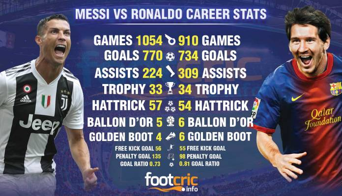
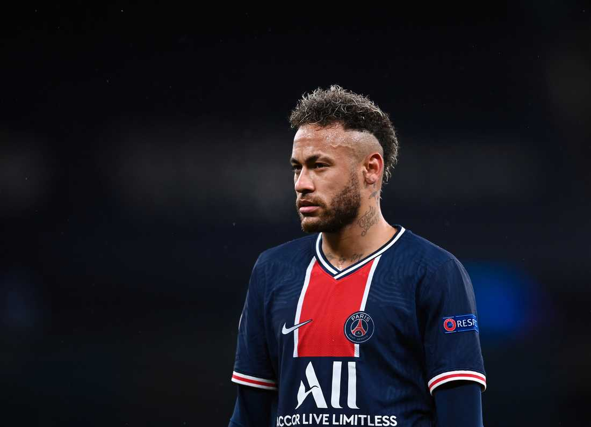

Lionel Messi and Cristiano Ronaldo are the two best football players in the history. Their stats are the best of all time in football. Both Messi and Ronaldo have achieved so much in their football career.
In this picture you can see Messi and Ronaldo all time stats. As you can see Messi has played 144 matches less than Ronaldo and only scored 36 goals less. In the picture you can see that Messi has a better goal ratio than Ronaldo, that is goals per game, Messi has 0.81 goals per game and Ronaldo has 0.73 goals per game. Messi has 85 more assist than Ronaldo. Ballon D'or is the biggest individual trophy a football player can win. For the past decade, Messi and Ronaldo have dominated the ballon d'or. As you can see, Messi has won it 6 times and Ronaldo 5 times.
I said that Messi and Ronaldo are the two best football players in the history, but Neymar JR is considered to be the best football player after Messi and Ronaldo. He has also had a great football career, but unfortunately Neymar has never won the ballon d'or. Neymar is 29 years old and still has many years left to play and people think that when Messi and Ronaldo stopp playing football Neymar will win a ballon d'or.